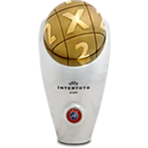
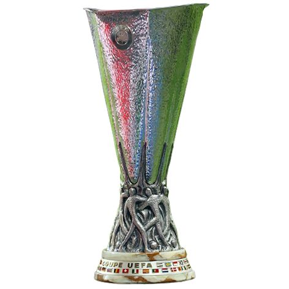
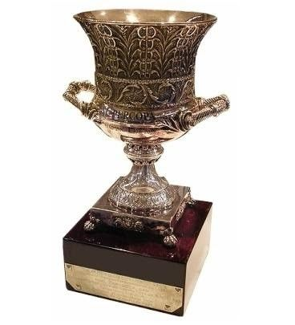

Official Website For Foot Goal

Official Website For Foot Goal
Leyenda del Málaga CF





Sérgio Paulo Marceneiro da Conceição, conocido futbolísticamente como Duda, es un ex-futbolista portugués nacido en Oporto el 27 de junio de 1980. Jugaba como extremo izquierdo o mediocentro y es considerado la mayor leyenda histórica del Málaga CF, siendo el jugador que más veces ha vestido la camiseta blanquiazul en competiciones oficiales.
"El Málaga me lo ha dado todo; siempre será el equipo de mi vida."
Llegó a España muy joven, pasando por el Cádiz CF y el filial del Málaga antes de dar el salto y consolidarse en el primer equipo. Su extraordinaria pierna izquierda, su exquisita visión de juego y su precisión milimétrica en los saques de falta y córners le convirtieron en uno de los mejores asistentes del fútbol español. Tras un paso exitoso de dos temporadas por el Sevilla FC, donde amplió su palmarés europeo y nacional, Duda decidió regresar a La Rosaleda, el lugar donde mejor fútbol desplegó.
En su segunda etapa como malaguista, vivió los años más dorados de la institución. Fue el gran capitán y líder espiritual del equipo dirigido por Manuel Pellegrini que maravilló a toda Europa, alcanzando los históricos cuartos de final de la UEFA Champions League en la temporada 2012/2013. Tras colgar las botas en el año 2017, Duda dejó un legado inalcanzable, convirtiéndose para siempre en un símbolo de fidelidad, entrega y amor absoluto por los colores del Málaga CF.